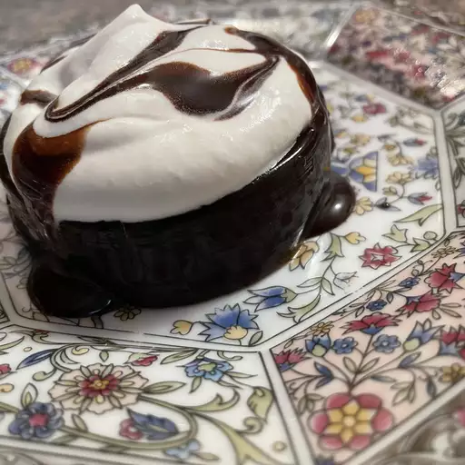

Coffee Jelly

Coffee Jelly can only be described in one sentence, 'Pop in and feel refresh'.
This delicacy can get you of your lazy-ass in seconds and give you the burst of energy needed to make you feel refreshed.
Ingredients:
- 2 tablespoons hot water
- 1 (.25 ounce) package unflavored gelatin
- 2 cups fresh brewed coffee
- 3 tablespoons white sugar
Directions
- Stir together gelatin and hot water in a small bowl until gelatin dissolves; pour into a saucepan. Stir in coffee and sugar, and bring to a boil over high heat.
- Pour coffee mixture into a shallow, 9-inch square or 7x11-inch baking dish. Chill in the refrigerator until solidified, 6 to 7 hours.
- Cut coffee jelly into cubes to serve.